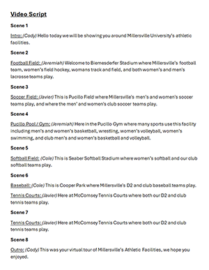

Javier Valdez Video Project |
||
| Home Print Project Photo Project Video Project | ||
|

Video at Youtube |
For this multimedia assignment, our class was divided into groups of four, each tasked with creating an informative video about the university, with a minimum duration of one minute. The project aimed to enhance our skills in planning, filming, and editing video content. Our group chose to focus on the various athletic fields available on campus, including football, soccer, basketball, baseball, and softball facilities. We began by collaboratively developing a script that outlined the key points we wanted to convey, ensuring that the content was both informative and engaging for viewers. This script served as a blueprint for our filming process, helping us organize our shots and narration effectively.
Utilizing cameras provided by our professor, we captured footage of each sports facility, paying close attention to framing and composition to highlight the features of each field. After collecting all necessary footage, we proceeded to the editing phase using Adobe Photoshop. Although primarily known for image editing, Photoshop’s video editing capabilities allowed us to arrange clips on the timeline, adjust brightness and contrast, and fine-tune color settings to enhance the visual quality of our video. We also added transitions and text overlays to provide context and smooth progression between scenes. Upon completing the editing process, we uploaded our final video to YouTube, making it accessible for our classmates and professor. The culmination of the project involved a class viewing session, where each group presented their video, allowing us to share our work and appreciate the diverse perspectives and creative approaches of our peers.
|
|
|
© 2025 Javier Valdez | ||